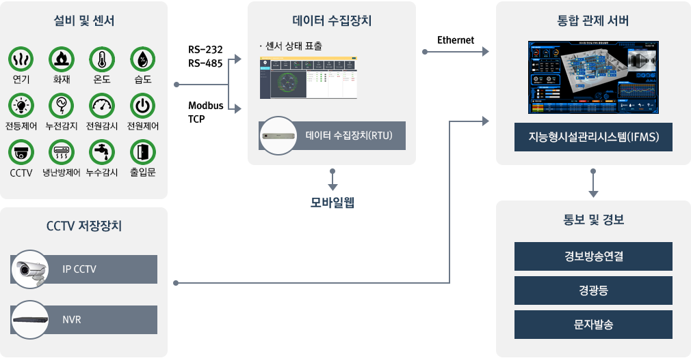
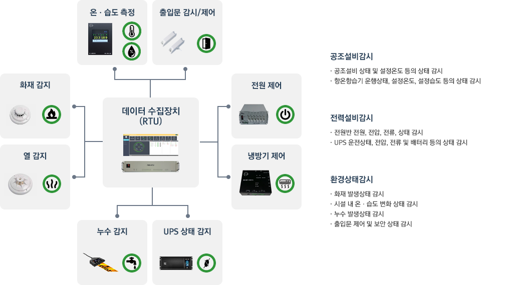
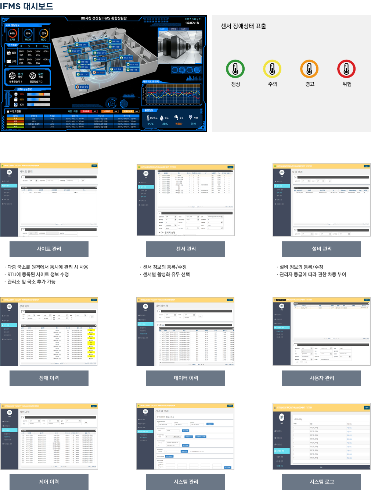
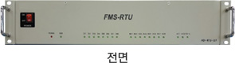
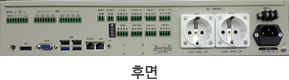
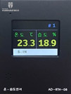
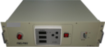
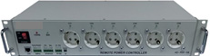
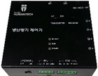

IT인프라
-
주요기능
- IT인프라의 운영현황 및 서비스 상태를 파악하며 고객맞춤형 직관적인 대시보드를 구성하여 실시간 구성, 장애 및 성능 모니터링 정보 제공
- 모든 설비 동작감시 및 제어가 가능하며 각종 센서를 통해 환경요소에 대한 실시간 감시가 가능하며 이벤트(화재, 누수, 정전 등) 발생시 즉시 전파
- 네트워크 장비 및 인터페이스 실시간 모니터링이 가능하며 실시간 트래픽 관리와 장비별 특성에 맞는 성능 항목 감시 및 관리 가능
-
시스템 구성

센서연동

-
운영화면 예시

-
장비 주요 규격
RTU 사양

세부항목 규격 POWER 스위치 데이터수집장치 전원 ON/OFF 스위치 POWER LED 데이터수집장치 전원 LED RUN 데이터수집장치 동작 상태 표시 LED DI 1~ 8 LED DI(Digital Input)1~8 동작 상태 표시 LED RO 1 ~ 8 LED RO(Relay Output)1~8 동작 상태 표시 LED AC 1 ~ 2 LED AC전원 1~2 제어 상태 표시 LED LIGHT LED LIGHT 제어상태 표시 LED 
세부항목 규격 출입문 출입문 센서(DI 5) 연결 포트 DI 3CH DI(Digital Input) 6,7,8 입력 포트 DO 8CH RO(Relay Output) 1,2,3,4,5,6,7,8 출력 포트(릴레이 출력 방식) 열 감지 열감지 센서(DI 1)입력 포트 연기 감지 연기감지 센서(DI 2)입력 포트 누수감지 누수감지 센서(DI 3)입력 포트 예비 DI SPARE DI(DI 4)입력 포트 RS-485 RS-485통신 단자 이며, 전원감시장치 연결 포트로 사용 예비 RS-232 장치 확장용 SPARE RS-232 통신 포트 전등제어 전등 제어용으로, 전등 전원 AC 연결 포트(AC 한선만 연결) VGA PORT 모니터의 D-SUB 케이블 연결용 포트 USB PORT USB 연결 포트 LAN PORT 이더넷 연결 포트 리모컨 냉난방 제어용 리모컨 연결 포트 온·습도센서 온ㆍ습도센서 연결 포트 온·습도 센서

구분 항목 규격 비고 프로세서 MCU CPU 32Bit / 72MHz 이상 내부 메모리 FLASH 256KByte,
SRAM 48KByte 이상외부 메모리 FLASH 128Mbit 인터페이스 통신 포트 RJ-45 (1) F/W Upgrade (RS-232C) RJ-45 (2) SPARE (RS-232C) RJ-45 (3) (With transformer) Ethernet 전원 입력 및 통신 단자 MRT9P3.81SQ-04P 접점 IN 스위치 KSP-02H (DIP S/W) 접점 입력 일반적 특성 사용 전원 전압 : DC +9V ~ +36V 동작 온도 -30℃ ~ +80℃ 오차범위 ±2℃ 동작 습도 10% ~ 90% (결로없음) 오차범위 ±3% Size (W×H×D) 80 x 110 x 30 단위 mm 전원 감시 장치

구분 항목 규격 비고 전원감시장치
(im-PROIII WC)동작전원 AC/DC110V~220V±10 60Hz 계측전압 입력범위 AC60~418V 계측전류 입력범위 0.05~5A 2차 전류 5A CT 사용 주요 기능 전압, 전류 감시
유효전력, 주파수 감시
지락 감시통신 포트 RS-485 동작 온도 -10℃~+55℃ 저장 온도 -10℃~+60℃ 습도 80% 이하 인터페이스 통신포트 BR-762DA Serial
(RS-485)전원스위치 BK-P5 전원감시기 ON/OFF 배선용차단기 BS32c (20A) 1.5kA 출력전원 K-32-3R AC 출력 Fuse AC250V/2A 일반적 특성 사용 전원 AC220V 동작 온도 -10℃~+55℃ 동작 습도 80% 이하 Size (W×H×D) 435 x 350 x 134 단위 mm 전원 제어 장치

구분 항목 규격 비고 프로세서 MCU CPU 32Bit / 72MHz 이상 내부 메모리 FLASH 256KByte,
SRAM 48KByte 이상외부 메모리 FLASH 128Mbit 인터페이스 통신 포트 RJ-45 LAN MRT9P3.81SQ-05P SERIAL
(RS-232C/RS-485)MRT9P3.81SQ-06P F/W UPGRADE
(RS-232C)MRT9P3.81SQ-04P SPARE
(IN1/OUT1)KSP02H RS485 ID SELECT AC 입력 포트 K32-3R 후면부 AC 출력 포트 닥트형 콘센트 (16A 250V) 전면부 6채널 DC 입력 KCD1-101 일반적 특성 사용 전원 AC 220V / 60HZ.
Max 30A동작 온도 -10℃ ~ +70℃ 동작 습도 5% ~ 70% Size (W×H×D) 482 x 88 x 180 단위 mm 냉난방 제어 장치

구분 항목 규격 비고 프로세서 내부 메모리 FLASH 256KByte,
SRAM 48KByte 이상외부 메모리 FLASH 128Mbit 인터페이스 통신 포트 MRT9P3.81SQ-04P SERIAL
(RS-232C)MRT9P3.81SQ-05P F/W UPGRADE
(RS-232C)전원 스위치 MS-102-C3 ON/OFF 설정 스위치 TS-1105 ANGLE TERM IR LED 선택스위치 PBS-110-G-PCB 내부/외부 선택 IR LED SI5313-C PD KSM-603LM TERM 일반적 특성 사용 전원 DC 12V 동작 온도 -10℃ ~ +70℃ 동작 습도 5% ~ 70% Size (W×H×D) 98 x 30 x 90 단위 mm 37 x 24 x 36 IR LED 외부용, 단위 mm